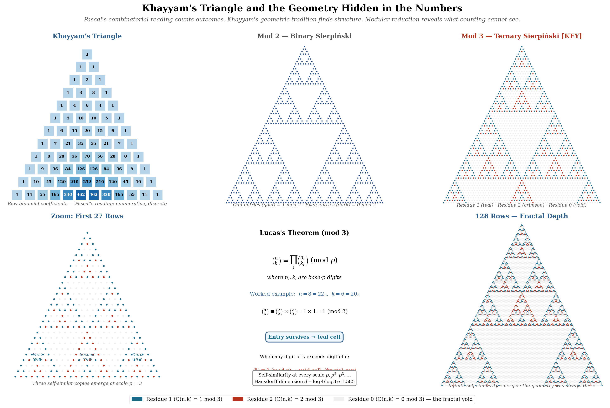

Abstract. The triangular array of binomial coefficients has been called “Pascal’s Triangle” in the West for centuries—yet it was known in India, in the Islamic world and in China long before Pascal’s Traité of 1654. In Iran it carries the name of the Persian mathematician Omar Khayyam, whose work on the extraction of roots, written before about 1070 and now lost, is the basis for associating the triangle with him; he was not its first discoverer. We review this history and correct the popular account where it goes wrong. We then argue that a further consideration favours Khayyam’s name: the triangle’s most striking structural property is geometric. Reduce the triangle’s entries modulo any prime \(p\) and a Sierpiński-type fractal emerges—a self-similar geometric structure far from the probabilistic questions Pascal put to the triangle, and of the kind of hidden geometry that runs through Khayyam’s work. For \(p=3\) its Hausdorff dimension is \(\log 6/\log 3 \approx 1.631\).
This paper is the second in a nine-paper program on constitutional sieve theory [18]. The fractal motivates the program’s interest in the prime 3, but it does not supply its arithmetic: nothing in the fractal singles out the prime 3, and the program’s central arithmetic claim, a level of distribution \(\theta _W = 5/8\) for the moduli \(3^K\), is a conjecture [20]. This paper makes the historical and mathematical case for the name, and shows you the fractal.
Date: January 2026; revised November 2026.
2020 Mathematics Subject Classification. 01A30, 11B65, 28A80, 11N35.
Key words and phrases. Pascal’s triangle, Khayyam’s triangle, Sierpiński fractal, Lucas’s theorem, modular arithmetic, history of mathematics, cascade moduli, constitutional sieve theory.
Revision note (November 2026). The Hausdorff dimension of the mod-\(p\) fractal is corrected to \(\log (p(p+1)/2)/\log p\), which is \(\log 6/\log 3\approx 1.631\) for \(p=3\) (larger, not smaller, than the mod-2 value), with six, not three, self-similar copies at each scale. The claim that the mod-3 void pattern matches the count of “\(k\) invalid configurations out of \(2^k\)” is false and has been withdrawn, as has the claim that the fractal explains why the prime 3 is singled out. Companion results are now cited with their revised status: \(\theta _W=5/8\) is a conjecture and the counting formula is a postulate. The history is corrected: Khayyam’s treatment of the binomial expansion is lost, his surviving algebra does not contain the triangle, and earlier sources are listed; the date of Apianus (1527), the gaps to Pascal and the al-Ṭs citation are fixed. The 11-decimal solar-year figure, a modern reconstruction of doubtful authenticity, is no longer presented as Khayyam’s, and the claim that the fractal went unnoticed for three centuries is replaced by its nineteenth-century history.
Here is a simple question. You know the triangular array of binomial coefficients—the one where each entry is the sum of the two above it, the one that encodes combinations, gives you Pascal’s Rule, and sits in every combinatorics textbook. You call it Pascal’s Triangle. But what does its deepest structural property look like, and whose mathematical instincts would have found it?
Colour every entry that is not divisible by 3 and leave the rest blank. Do this for row after row, hundreds of rows deep. What emerges is not a triangle. It is a fractal—an infinite, self-similar geometric object that replicates itself at every scale (Figure 1).
This is not a recent discovery: the arithmetic behind it was worked out in the nineteenth century [7, 5], and the picture is well documented [11, 12]. The question we ask here is a different one: does this fractal belong to Pascal’s mathematical world, or to someone else’s?
The answer, we will argue, is someone else’s: Omar Khayyam’s. Khayyam was not the first to know the triangle, and his own account of it is lost (Section 2). Our case rests partly on history and partly on the character of his mathematics.
The historical record is clear that the triangle long predates Pascal; it does not support the popular claim that Khayyam was the first to know it. Table 1 lists some of the appearances of the binomial coefficient triangle before Pascal’s Traité du triangle arithmétique, printed in 1654 and published posthumously in 1665 [4]; see [13] for a full account.
| Date | Source | Location |
| 10th c. | Halyudha, on Piṅgala’s meru-prastra | India |
| c. 1000 | al-Karaj (reported by al-Samaw’al, 1144) | Baghdad |
| c. 1050 | Jia Xian (reported by Yang Hui) | China |
| before c. 1070 | Omar Khayyam (lost work on roots) | Persia |
| 13th c. | Jordanus de Nemore | Europe |
| 1261 | Yang Hui [3] | China |
| 1265 | al-Ṭs, Jawmi‘ al-ḥisb [2] | Persia |
| 1303 | Zhu Shijie | China |
| 1356 | Narayana Pandita | India |
| 1527 | Petrus Apianus | Germany |
| 1654 | Blaise Pascal [4] | France |
Khayyam’s own treatment of the triangle does not survive. His algebra treatise, the Risla f’l-barhn ‘al mas’il al-jabr wa’l-muqbala [1, 14], was written c. 1070 in Samarkand; it classifies the cubic equations and solves them with conic sections, and it does not contain the triangle. In it Khayyam mentions an earlier work of his own on finding roots of higher order; that work, which presumably used the binomial coefficients, is lost [14, 13]. The association of the triangle with Khayyam rests on this reference and on the later tradition that carries his name in Iran.
Others were earlier. Al-Karaj’s construction of the triangle is reported by al-Samaw’al (1144); Jia Xian’s (c. 1050) is reported by Yang Hui, who credits him [3]; and the Indian prosodists had the array as Piṅgala’s meru-prastra, described explicitly by Halyudha in the tenth century [13]. Two centuries after Khayyam, Naṣr al-Dn al-Ṭs used the binomial coefficients for the extraction of roots in his Jawmi‘ al-ḥisb of 1265 [2]. Apianus printed the triangle in Europe, on the title page of his Rechnung, in 1527.
Pascal, born in 1623, printed his Traité in 1654: some 584 years after Khayyam’s algebra, 127 years after Apianus, and last of all the entries in Table 1. Reference works already record that the triangle predates Pascal [17, 13]; in China it is called Yang Hui’s triangle, and in Iran it already carries Khayyam’s name. Corrections of this kind are not unusual: “Arabic numerals” came from India; the Fibonacci sequence was known in India, to Virahṅka centuries earlier and to Hemachandra before Fibonacci; the Pythagorean theorem was recorded in Babylon a millennium before Pythagoras. Restoring a name is not erasure. But since Khayyam was not first, priority alone would favour other names; our case for his rests also on the argument of the next sections.
To understand why the fractal matters, one must understand the different questions Pascal and Khayyam were asking.
Pascal’s Traité applies the triangle to, among other things, the problème des partis [4]—the problem of dividing gambling stakes fairly when a game of chance is interrupted midway. His question there was: how many outcomes are possible? The triangle answered it. Each entry \(\binom {n}{k}\) counted the ways to choose \(k\) items from \(n\)—discrete, additive, enumerative. Pascal’s tradition was probabilistic and combinatorial. He saw the triangle as a counting machine, and a very good one.
Khayyam’s tradition was different. His central mathematical achievement was solving cubic equations not algebraically but geometrically—by intersecting conic sections: a parabola and a circle for some types of cubic, and a parabola and a hyperbola, a hyperbola and a circle, or two hyperbolas for others [1, 14]. In that work he did not ask how many ways something could happen. He asked what shape the relationship took. Where Pascal counted, Khayyam looked for hidden structure.
This instinct extended to his astronomy. From about 1074, Khayyam worked with other astronomers at the Isfahan observatory, with naked-eye instruments, on the calendar reform that produced the Jalali calendar of 1079, whose year began at the observed vernal equinox. The year length his group adopted is not, as far as we can determine, preserved in a reliable primary source. The figure often quoted for it, 365.24219858156 days, cannot be taken at face value: it equals \(365 + 683/2820\) to every printed digit, the mean year of a 2820-year intercalation cycle proposed in the twentieth century, and is very likely a modern back-calculation rather than Khayyam’s value [15]. (Taken at face value, it would differ from the modern mean tropical year of 365.242190 days by 0.741447 seconds per year; but the mean tropical year in Khayyam’s time was itself about 365.24225 days [16].) Popular accounts credit the Jalali calendar with an error of one day in about 5,000 years, against one day in about 3,200 years for the Gregorian calendar, whose mean year is 365.2425 days. Since the Jalali calendar was fixed by observation, such comparisons depend on which arithmetic leap-year rule is attributed to it; a 33-year cycle with eight leap years, for instance, drifts by one day in about 4,300 years against the mean tropical year.
A man remembered in the West for a jug of wine and a loaf of bread led a calendar reform whose accuracy, for its time, was remarkable.
We read this as a method rather than luck: find the hidden geometry, ask what structure the observations encode, approach the problem as an outsider unbounded by specialist convention. On this reading, the same man was the right man to look at a triangle of counting numbers and ask not “how many?” but “what shape is hiding in here?” There is no evidence that Khayyam studied the triangle modulo a prime; the point concerns the kind of question, not a discovery he made.
Here is the experiment. Take the triangle. Replace every entry with its remainder when divided by 3. Entries divisible by 3 become 0—blank, void, absent. The rest survive. The result is Figure 1: the survivors arrange themselves into a perfect Sierpiński-type fractal. The first \(3^m\) rows contain six copies of the first \(3^{m-1}\) rows—one in the top band of \(3^{m-1}\) rows, two in the middle band, three in the bottom band—separated by voids. Each of those contains six smaller copies. Each of those contains six smaller copies. (The copies agree with the original in which entries vanish; in one of them the nonzero residues are multiplied by 2.) The self-similarity continues without bound.
This is not an approximation or a visual trick. It is an exact mathematical fact, established by Lucas’s theorem [5].
Lemma 4.1 (Lucas [5]). Write \(n = \sum _i n_i p^i\) and \(k = \sum _i k_i p^i\) in base \(p\). Then \[ \binom {n}{k} \equiv \prod _i \binom {n_i}{k_i} \pmod {p}. \] In particular, \(\binom {n}{k} \not \equiv 0 \pmod {p}\) if and only if \(k_i \leq n_i\) for all \(i\).
The product in Lemma 4.1 is zero the moment any base-\(p\) digit of \(k\) exceeds the corresponding digit of \(n\)—and exactly those positions become the voids that carve the fractal. The self-similarity at scales \(p, p^2, p^3, \ldots \) follows directly from the self-similar structure of base-\(p\) digit representations. Counting the survivors is equally direct: by Lemma 4.1, row \(n\) has \(\prod _i (n_i+1)\) entries not divisible by \(p\) [9], and summing over the rows \(n < p^m\) gives \((1+2+\cdots +p)^m = (p(p+1)/2)^m\).
Proposition 4.2 ([11, 12]). For any prime \(p\), the entries of the triangle not divisible by \(p\) form a Sierpiński-type fractal, self-similar at scales \(p^m\) for all positive integers \(m\): the first \(p^m\) rows contain \(p(p+1)/2\) copies of the pattern of the first \(p^{m-1}\) rows, and \((p(p+1)/2)^m\) entries not divisible by \(p\) in all. Rescaled to a triangle of fixed size, the pattern converges to a self-similar set of Hausdorff dimension \[ d = \frac {\log \bigl (p(p+1)/2\bigr )}{\log p}. \] For \(p=3\) this gives \(d = \log 6 / \log 3 \approx 1.631\).
Remark 4.3. The value \(\log 3 / \log 2 \approx 1.585\) is the Hausdorff dimension of the binary (\(p=2\)) Sierpiński triangle, the gasket of [6]—the case \(p=2\) of the formula. The mod-3 case has the larger dimension \(\log 6 / \log 3 \approx 1.631\), and the dimension increases with \(p\) towards 2 (about 1.683 for \(p=5\) and 1.712 for \(p=7\)). These are distinct fractals.
4.1. Connection to the companion papers. This fractal is a historical and mathematical object in its own right, and it motivated the companion papers’ interest in the prime 3. It does not supply their arithmetic. An earlier version of this section stated that the void pattern at scale \(3^K\) matches the count of invalid configurations in a \(K\)-level cascade sieve, “\(k\) invalid configurations out of \(2^k\) total”. That is false, and the claim is withdrawn. In the first \(3^K\) rows there are \(6^K\) nonzero and \(3^K(3^K+1)/2 - 6^K\) zero entries modulo 3 (0, 9, 162 and 2025 zero entries for \(K = 1, 2, 3, 4\)). The survivor density \(1, 4/5, 4/7, 16/41, 16/61, \ldots \) tends to \(0\), whereas \((2^K-K)/2^K\) tends to \(1\), and no statistic of the triangle equals \(2^K - K\).
The companion results, with their current status, are as follows.
The formula \(\theta _k = (2^k-k)/2^k\) is a postulate: a system “of depth \(k\)” is defined as one in which exactly \(k\) configuration classes are eliminated [18, 19]. It is not a theorem. If a configuration counts as invalid whenever some constraint fails, there are \(2^k - 1\) invalid configurations, not \(k\).
The level of distribution \(\theta _W = 5/8\) for the moduli \(q = 3^K\) is a conjecture [20]. The summed form of the statement holds for every fixed exponent below 1, so it carries no information about \(5/8\); the per-modulus form would go beyond what the Generalised Riemann Hypothesis gives.
Condition W3, the absence of exceptional zeros for characters modulo \(3^K\), is true, with a one-line proof: \((\mathbb {Z}/3^K\mathbb {Z})^\times \) is cyclic of even order, so the only real non-principal character modulo \(3^K\) is induced from the character \(\chi _{-3}\) modulo 3; an exceptional zero can only belong to a real character, so it would be a zero of \(L(s,\chi _{-3})\), which is positive on \((0,1]\) [21].
An analogy between this arithmetic and information theory is explored in [22].
Nothing in Proposition 4.2 singles out the prime 3: Lucas’s theorem and the dimension formula hold uniformly for every prime. The companion papers single out 3 because it is the only prime that ramifies in \(\mathbb {Z}[\omega ]\); that is a property of the field \(\mathbb {Q}(\sqrt {-3})\), not of the fractal, and every prime ramifies in some quadratic field (5 in \(\mathbb {Q}(\sqrt {5})\), 7 in \(\mathbb {Q}(\sqrt {-7})\)). An earlier version described the fractal and the ramification of 3 in \(\mathbb {Z}[\omega ]\) as “two faces of the same structure”; no such relation has been established, and the claim is withdrawn.
4.2. When the fractal was noticed. The arithmetic behind the fractal is a nineteenth-century achievement. Kummer determined in 1852 the exact power of a prime dividing \(\binom {n}{k}\) [7]; Lucas proved Lemma 4.1 in 1878 [5], and it characterises the void pattern exactly; Glaisher counted the odd entries in each row in 1899 [8]; and Fine counted the entries of each row not divisible by \(p\) in 1947 [9]. Gardner surveyed the triangle’s patterns for a general audience in 1966 [10], and Wolfram treated the geometry of binomial coefficients modulo \(p\), including its fractal dimension, in 1984 [11]. Pascal’s Traité dates from 1654, so about two centuries passed before the arithmetic of the pattern was understood.
Pascal’s question was: how many ways? Combinatorial, enumerative, discrete. That question is extraordinarily productive—it built probability theory and shaped mathematics for generations. On its own it does not lead to the fractal: the value \(\binom {n}{k}\) of a single entry carries no hint of the pattern. What revealed it was a question about the arithmetic of the entries—which of them a given prime divides—and then, with Glaisher and Fine, a count of those entries.
We read that as a question about structure: what do these numbers encode? Not how many, but what shape. Not outcomes, but geometry. It is not the question Pascal asked of the triangle. It is, we argue, the kind of question Khayyam asked.
4.3. What is lost when we forget. There is a cost to misattribution that goes beyond historical fairness. When a mathematical object carries the wrong name, it inherits the wrong conceptual tradition. Students and researchers approach it with the named person’s questions, methods, and intuitions. The name is not merely a label—it is a frame. And frames determine what you can see.
“Pascal’s Triangle” frames the object as combinatorial. It belongs to the world of counting, probability, and discrete mathematics. That framing is not wrong—it is incomplete, and its incompleteness is invisible when the name goes unquestioned.
“Khayyam’s Triangle” frames the object differently. It belongs to the world of hidden geometry, structural patterns, and the question of what arithmetic encodes. Under that frame, the natural next question is not “what does this count?” but “what does this look like when transformed?” Modular reduction. Base-\(p\) representations. Self-similar structure. Residue classes. These are the questions that motivated the companion papers [19, 20, 21]; their central arithmetic claim, a level of distribution \(5/8\) for the moduli \(3^K\), remains a conjecture.
Discoveries, in our view, often come not from specialists deepening a known tradition but from outsiders who bring a different question. Khayyam was a geometer and astronomer looking at an arithmetic object. That combination—the outsider’s question applied to the insider’s object—is what this program tries to imitate, in its use of the Eisenstein integers [20] and in its analogy with information theory [22]. Its methodology is set out in [23].
The ancient wisdom was not lost through malice. It was submerged by the ordinary mechanics of transmission and canonisation. European mathematical tradition inherited Pascal’s name and Pascal’s question. The geometric tradition—find the hidden structure, come at the problem as an outsider, ask what shape the numbers encode—was submerged.
It is not submerged anymore.
We are not the first to correct a mathematical name when the evidence became clear enough. We will not be the last.
Consider Pluto. For seventy-six years it was the ninth planet—named, classified, taught in every school. Then the evidence accumulated that it did not fit the category, and in 2006 the International Astronomical Union reclassified it. Science corrected itself. The reclassification was not erasure—Pluto still exists, still has its name, still has its discoverers. What changed was the frame in which it was understood. We propose something analogous, and in the opposite direction. Not demotion but restoration.
We make three points.
First. The triangle was known centuries before Pascal, in India, in the Islamic world and in China (Table 1). Khayyam’s own treatment, written before about 1070, is lost and is known only through his reference to it; he was not the first, and if priority alone decided the name, al-Karaj, Jia Xian or the Indian prosodists would have the stronger claim. Reference works already record the earlier history [17, 13]. Iran already uses Khayyam’s name, and China uses Yang Hui’s. The correction we propose is not an invention; it extends an existing usage.
Second. The triangle’s most striking structural property is a self-similar fractal revealed by modular reduction via Lucas’s theorem (Lemma 4.1, Proposition 4.2). We argue that it is a geometric property, best seen through a geometric, structure-seeking lens, and that this lens is closer to Khayyam’s [1] than to the combinatorial use Pascal made of the triangle [4]. (Historically, the fractal’s arithmetic was worked out by Kummer, Lucas, Glaisher and Fine, not by either man.)
Third. The cost of the wrong name, we believe, is epistemic, not merely aesthetic. A name frames the questions one asks, and can train generations to approach a geometric object with a combinatorial frame. The program documented in [18, 19, 20, 21, 22, 23] was, in the author’s view, prompted by asking Khayyam’s kind of question rather than Pascal’s.
We are not proposing to expunge Pascal from the literature. His contributions to probability and combinatorics are real, lasting, and appropriately celebrated. We propose that the standard Western designation go forward as Khayyam’s Triangle, with a note acknowledging Pascal’s work and the earlier history of Table 1—much as Fibonacci’s contributions are noted while the earlier Indian sources are acknowledged, and as “Arabic numerals” are acknowledged to have come from India. This is a proposal about a name, not a claim of priority.
The geometry was always there.
The triangle was never only Pascal’s.
We propose that the name catch up.
The author thanks Omar Khayyam posthumously: for the cubic equations, for the calendar, and for the geometric instinct that turns counting numbers into hidden structure.

[1] O. Khayyam, Risla f’l-barhn ‘al mas’il al-jabr wa’l-muqbala (Treatise on the demonstration of problems of algebra), Samarkand, c. 1070 CE; edition and translation in [14].
[2] Naṣr al-Dn al-Ṭs, Jawmi‘ al-ḥisb bi-l-takht wa-l-turb, 1265 CE.
[3] Yang Hui, Xiangjie Jiuzhang Suanfa, China, 1261 CE.
[4] B. Pascal, Traité du triangle arithmétique, G. Desprez, Paris, 1665 (printed 1654).
[5] É. Lucas, Théorie des fonctions numériques simplement périodiques, Amer. J. Math. 1 (1878), 184–196, 197–240, 289–321.
[6] W. Sierpiński, Sur une courbe dont tout point est un point de ramification, C. R. Acad. Sci. Paris 160 (1915), 302–305.
[7] E. E. Kummer, Über die Ergänzungssätze zu den allgemeinen Reciprocitätsgesetzen, J. Reine Angew. Math. 44 (1852), 93–146.
[8] J. W. L. Glaisher, On the residue of a binomial-theorem coefficient with respect to a prime modulus, Quart. J. Pure Appl. Math. 30 (1899), 150–156.
[9] N. J. Fine, Binomial coefficients modulo a prime, Amer. Math. Monthly 54 (1947), 589–592.
[10] M. Gardner, The multiple charms of Pascal’s triangle (Mathematical Games), Sci. Amer. 215(6) (December 1966), 128ff.
[11] S. Wolfram, Geometry of binomial coefficients, Amer. Math. Monthly 91 (1984), 566–571.
[12] A. M. Reiter, Determining the dimension of fractals generated by Pascal’s triangle, Fibonacci Quart. 31(2) (1993), 112–120.
[13] A. W. F. Edwards, Pascal’s Arithmetical Triangle, Charles Griffin, London, 1987; reprinted Johns Hopkins University Press, Baltimore, 2002.
[14] R. Rashed and B. Vahabzadeh, Omar Khayym the Mathematician, Bibliotheca Persica Press, New York, 2000.
[15] M. Heydari-Malayeri, A concise review of the Iranian calendar, arXiv:astro-ph/0409620, 2004.
[16] J. Laskar, Secular terms of classical planetary theories using the results of general theory, Astron. Astrophys. 157 (1986), 59–70.
[17] E. W. Weisstein, Pascal’s Triangle, MathWorld—A Wolfram Web Resource, https://mathworld.wolfram.com/PascalsTriangle.html.
[18] K. Wakil, Constitutional Forcing, ARC Institute of Knowware, preprint, 2026.
[19] K. Wakil, Ramanujan’s Dimensional Forcing: A Universal Formula for Sieve Levels, ARC Institute of Knowware, preprint, 2026.
[20] K. Wakil, Ternary Forcing on the Hexagonal Lattice: Eisenstein Integers, Cascade Moduli, and a Conjectured Level of Distribution 5/8, ARC Institute of Knowware, preprint, 2026.
[21] K. Wakil, Condition W3: Absence of Siegel Zeros for Characters Modulo \(3^K\), ARC Institute of Knowware, preprint, 2026.
[22] K. Wakil, The Shannon–Wakil Effect: Constitutional Forcing as a Universal Pattern in Information Theory and Prime Arithmetic, ARC Institute of Knowware, preprint, 2026.
[23] K. Wakil, Spherical Cow Philosophy: A Methodological Framework for Mathematical Discovery, ARC Institute of Knowware, preprint, 2026.
The ARC Institute of Knowware, Calgary, Alberta, Canada
Email address: the@knowware.institute